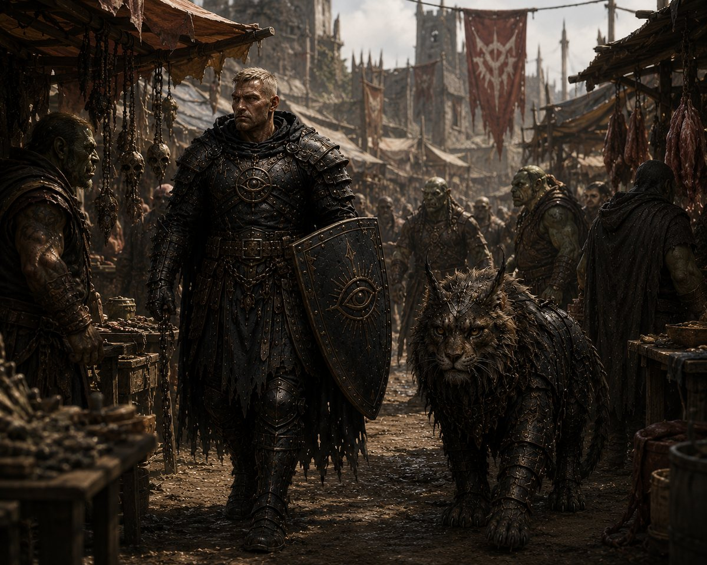
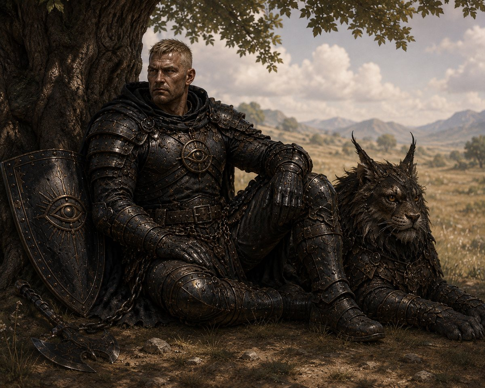
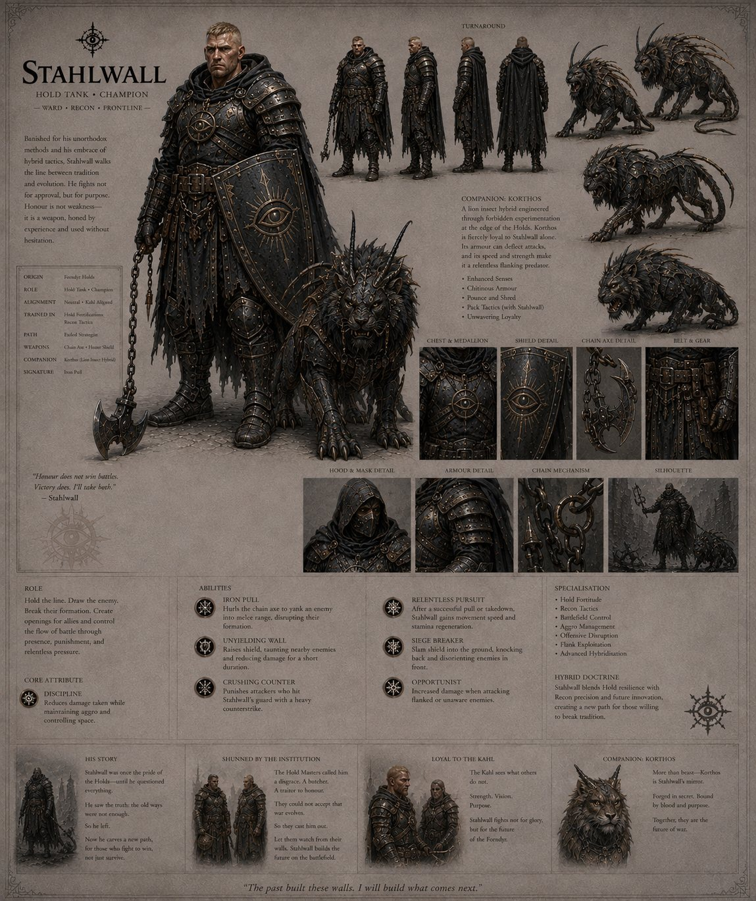

The First Age
Hold Tank · Champion · Ward · Recon · Frontline

The market road · Tap to open
Why he is here
He still carries the shield.
That is the detail I keep returning to, and it is the reason he goes first.
Stahlwall was thrown out of the Forndyr Holds for saying that the old way of fighting was no longer enough. The Hold Masters called him a butcher and a traitor to honour, which is a serious accusation among people who built their entire civilisation on holding a line and not moving. He left. He took up a chain axe, which is not a weapon anyone raised in the Holds is supposed to want, and he built a way of fighting that his own people consider a disgrace.
And he kept the shield. The honour shield. The one thing he could have left behind to make the point cleanly.
He did not abandon what he came from. He outgrew part of it and refused to let go of the rest, which is a far more uncomfortable position than simply rejecting the whole thing, and considerably harder to forgive. It is easy to dismiss someone who walked away. It is much harder to dismiss someone who is still, visibly, one of yours.
That is who he is. Here is why he is in the game.
The institution is not evil. It is late. I did not want a villain standing behind his exile. The Hold Masters are not corrupt, and they are not stupid. They are guarding something that worked for a very long time, which is exactly what you would want them to do, and they are doing it about ten years past the point where it stopped being enough. Every organisation you have ever worked inside has that person in it, and every one of them has treated that person roughly. Stahlwall is what happens when the world is changing faster than the people responsible for defending it are permitted to admit.
He is what hybridisation looks like when it costs something. I have written a fair bit about wanting a world that cannot be solved, where combining paths produces things neither path anticipated. Stahlwall is that argument standing in a field. He is a Hold fighter who learned to scout, which is not a combination the Holds recognise as legitimate, and the reason it works is precisely the reason he was condemned for it. The interesting builds should be the ones somebody would have told you not to make.
Everything on him is an account of what he did. Look at the painting rather than the sheet. The chain running from his belt to the axe in the dirt. Armour that has been repaired more times than it has been polished. The eye, on the chest and on the shield, which he did not have when he lived behind the walls. You can read the man off his gear without a word from me, and if you cannot, then I have failed at something more important than his backstory.
And then there is Korthos. Made in secret, at the edge of the Holds, through experimentation the Holds forbid. Which tells you something about the man that his own story politely does not. He did not just argue that the old ways were insufficient. He went and did the thing they had specifically prohibited, then walked back in with it.
The companion is not a reward he was given for being sympathetic. It is a decision he made, and a decision he is still living with.
I will not tell you what any of that does in play. There is a sheet at the bottom of this page with his abilities on it and I am not going to explain a single one of them.
He is the first person you meet here because he is the argument at its least comfortable. He was right, and it cost him everything, and the people who cast him out will probably never say so.
He is still standing at the front.
Exo · GEASA Interactive

Somewhere outside the Holds · Tap to open
His story
Stahlwall had once been exactly what the Hold expected a champion to be.
He was built for the line: broad shouldered, heavily armoured and disciplined enough to stand where lesser soldiers broke. He understood shields, formations and the simple mathematics of keeping an enemy away from the people behind him. He had been good at it.
Perhaps too good.
Because Stahlwall had begun asking questions.
The Hold taught that the line should be maintained, that enemies should be met directly and that strength found its proper expression through discipline. Stahlwall agreed with much of it. He believed in protecting people. He believed in endurance. He believed that a warrior who abandoned those behind him had failed regardless of how honourably he had fought.
But he had begun to wonder why honour had to be so clean.
An enemy did not become less dangerous because Stahlwall attacked him from the front.
If an opportunity existed to flank, he would take it. If an opponent exposed his back, Stahlwall would strike it. If deception created an advantage, he saw no reason to surrender that advantage merely to preserve someone's idea of a proper fight.
To Stahlwall, honour was not a set of rules about how violence had to look. Honour was what you did with the responsibility you had been given.
If protecting someone required fighting dirty, then fighting dirty was part of protecting them.
The Hold Master disagreed. So did the institution.
What began as philosophical disagreement became something more serious when Stahlwall started experimenting with hybridisation. He combined the resilience and battlefield control of Hold with the observation, mobility and opportunism of Recon. He studied ways to draw enemies out of formation rather than simply meeting them. He developed equipment around the principle that an enemy should not be allowed to dictate the terms of engagement.
His signature weapon became the clearest expression of that philosophy.
He welded an axe head to a chain. The weapon could be thrown into an enemy and used to drag them from the safety of their formation, pulling them directly into Stahlwall's reach. His shield remained in his other hand, allowing him to absorb the retaliation as the enemy was hauled toward him.
It was ugly. It was practical. And it worked.
The Hold saw an aberration. Stahlwall saw the beginning of something new.
The Kahl understood. Where the Hold looked backward toward traditions that had survived because they were trusted, the Kahl looked toward what could be built next. Stahlwall found himself increasingly drawn to that philosophy. The future did not frighten him merely because it was unfamiliar.
He believed the future belonged to those willing to build it.
That made him a problem.
The Hold Masters eventually shunned him. He was called a disgrace. A butcher. A man who had forgotten what honour meant.
Stahlwall left rather than abandon what he had learned.
He did not leave broken. He left convinced.
He continued refining himself outside the institution, developing the hybrid doctrine that would eventually define him. His heavy plate became more functional. His cloak became a dark hooded shelter that concealed his movements as much as it protected him from the elements. Around his neck he wore a medallion bearing a closed eye, a reminder of the vigilance he believed every warrior needed.
And beside him walked Korthos.
The creature looked like some terrible experiment at the boundary between beast and machine, a black, bipedal lion fused with insectile characteristics. Its body was plated, its movements unnaturally precise, and its loyalty to Stahlwall absolute.
Where another companion might have been a symbol of tradition, Korthos represented everything Stahlwall believed was coming. Hybridisation. Adaptation. A future built from whatever could be made useful.
The Hold had rejected that future. Stahlwall intended to survive long enough to see it arrive.
Then the army marched against the dead.
Stahlwall went with them. Whatever resentment he still carried toward the institution became irrelevant when the threat appeared. Soldiers were being sent into danger, and he was a soldier. Whatever the Hold Masters thought of him, Stahlwall would not stand behind a wall while others went to die.
The player travelled with him. They fought alongside the army, moved between formations and experienced the growing threat firsthand. Stahlwall's unusual methods began to make more sense as the situation deteriorated. He was not simply trying to win battles.
He was trying to survive them.
Then the army itself became the enemy.
The dead turned upon the living. Orders collapsed. Formations broke. The soldiers Stahlwall had marched beside became predators.
For a man who had spent his life believing that the line existed to protect those behind it, there was no line left.
There was only escape. Stahlwall was left for dead.
He did not die.
He fought. He crawled. He dragged himself through the aftermath with Korthos beside him, using every unconventional technique the Hold had condemned him for learning. He pulled enemies into traps. He attacked from angles nobody expected. He used the terrain. He abandoned positions when holding them became suicidal and returned when doing so created an advantage.
He survived because he had never accepted that survival had to look honourable.
And when he found other survivors, he brought them with him. He did not leave wounded soldiers behind when he could carry them. He did not abandon civilians because they slowed him down. He did not stop when the road became impossible.
He simply kept moving toward the Capital.
By the time Stahlwall returned, the world he had left no longer existed.
The Fracture had already happened. The institutions were fractured. The chain of command was gone. The army was gone. The people who had once called him a disgrace were either dead, missing or desperately trying to understand what remained.
And suddenly the man they had cast out was one of the few surviving officers who understood the threat.
Stahlwall did not ask permission to take command. There was nobody left to ask.
Someone had to organise the soldiers who remained. Someone had to determine which settlements could still be defended. Someone had to understand the enemy. Someone had to make decisions.
So Stahlwall did.
The same man who had been expelled for refusing to fight according to the old rules now found himself responsible for rebuilding military authority from the ruins of the old one.
He did not become a ruler because he wanted power. He became one because there was an empty space where authority had been, and people were dying in that space.
Stahlwall filled it.
He gathered survivors. He established defensive positions. He reorganised what remained of the military. He began adapting the army to a world in which the old doctrine was no longer sufficient.
And this time, nobody could tell him that his methods were dishonourable. The world had already demonstrated what happened when civilisation refused to adapt.
The player becomes one of the people closest to him in this new period. They had survived the same catastrophe. They had fought through the same army. They had seen the same soldiers become monsters.
Their relationship therefore carries something different from the bonds the player formed with the Masters before it. There is no hierarchy between them. No mentor standing above a student.
They are survivors.
Stahlwall remembers the player from before the Fracture, but now he sees them differently. They are someone who endured the same impossible moment and came back.
That creates trust. Not comfortable trust. Earned trust.
The closed eye around his neck becomes more than a symbol. Stahlwall has learned what happens when people refuse to see.
He will not make that mistake again.
He watches. He adapts. He exploits every weakness. And when necessary, he does what the old Hold would never have allowed him to do.
He attacks from behind.
Because Stahlwall no longer believes that honour is measured by where you strike an enemy. He believes it is measured by who survives because you did.
The sheet

Tap to open, then tap again to zoom to full size